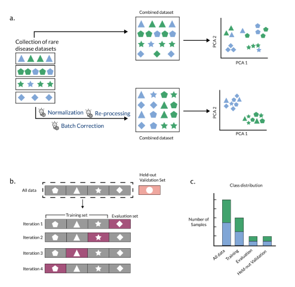
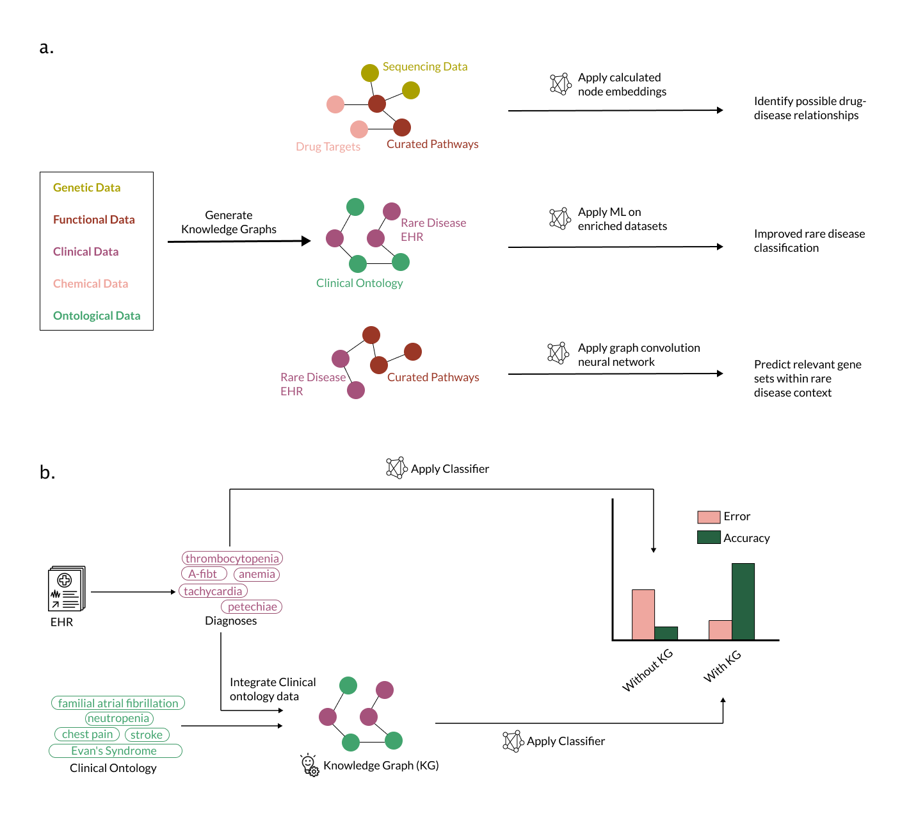
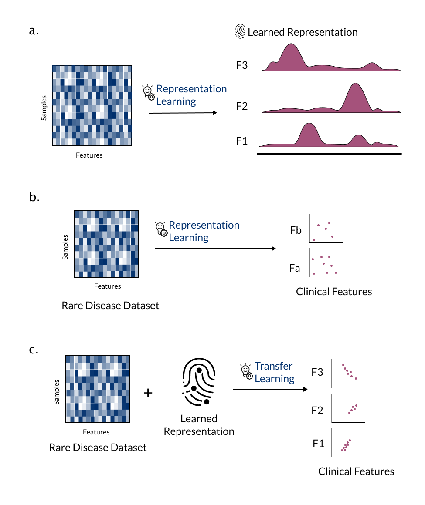
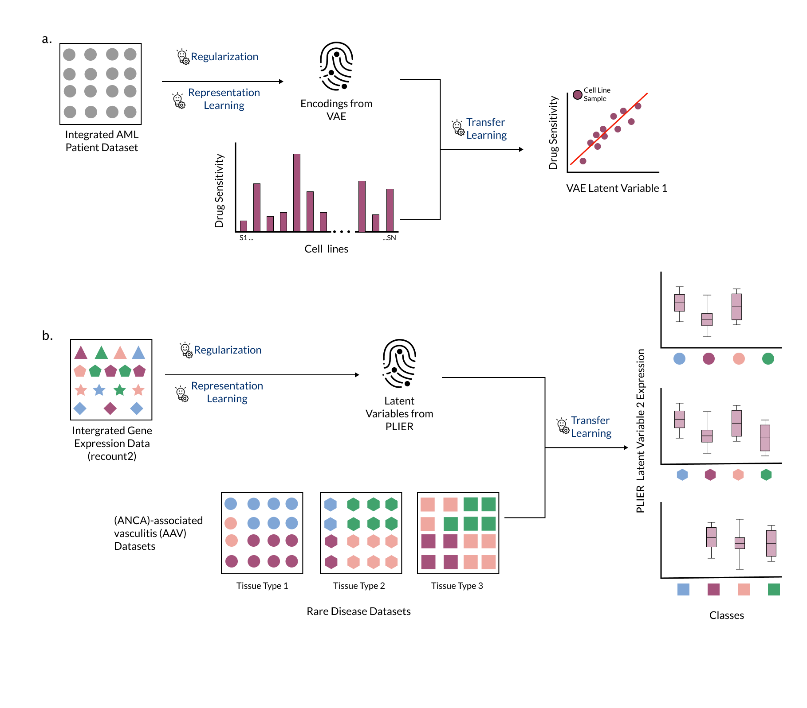

Robert J Allaway 0000-0003-3573-3565
· allaway
· allawayr
Sage Bionetworks
· Funded by Neurofibromatosis Therapeutic Acceleration Program; Children’s Tumor Foundation
Deepashree Venkatesh Prasad 0000-0001-5756-4083
· dvenprasad
Childhood Cancer Data Lab, Alex’s Lemonade Stand Foundation
Justin Guinney 0000-0003-1477-1888
· jguinney
Sage Bionetworks
· Funded by Neurofibromatosis Therapeutic Acceleration Program; Children’s Tumor Foundation
Casey Greene✉ 0000-0001-8713-9213
· cgreene
Department of Systems Pharmacology and Translational Therapeutics, Perelman School of Medicine, University of Pennsylvania; Childhood Cancer Data Lab, Alex’s Lemonade Stand Foundation
☯: These authors contributed equally to this work.
(Instructions: Describe the background, basic structure of the article, list material to be covered indicating depth of coverage, how they are logically arranged, include recent pubs in the area, 300-500 words)
The advent of high-throughput profiling methods such as genomics and other technologies has accelerated basic research and made deep molecular characterization of patient samples routine.
These approaches provide a rich portrait of genes, molecular pathways, and cell types involved in complex phenotypes.
Machine learning can be a useful tool to extract disease-relevant patterns from high dimensional datasets.
However, depending on the complexity of the biological question, machine learning often requires a large number of samples to identify recurrent and biologically meaningful patterns.
Rare diseases are inherently limited in clinical cases and thus have few samples to study.
Precision medicine also presents a similar challenge, where patients with common diseases are partitioned into small subsets of patients based on particular characteristics.
In this perspective, we outline the challenges and emerging solutions for using machine learning in the context of small sample sets, specifically that of rare diseases.
Advances in machine learning methods for rare disease are likely to be informative for applications beyond rare diseases in which sample sizes are small but datasets are complex (e.g., using genomics data for predictive modeling in precision medicine).
We propose that the methods community prioritizes the development of machine learning techniques for rare disease research.
Introduction
Rare disease researchers increasingly depend on machine learning to analyze complex datasets.
A systematic review of the application of ML in rare diseases using the European Union definition of rare disease (fewer than 5 patients per 10,000 people) uncovered 211 human data studies that used ML to study 74 different rare diseases over the last 10 years.[1]
Indeed, ML can be a powerful tool in biomedical research but it does not come without pitfalls, some of which are magnified in a rare disease context.[2]
In this perspective, we discuss considerations for using two types of ML – supervised and unsupervised learning – in the study of rare diseases, with a specific focus on high-dimensional molecular data.
ML algorithms are computational methods that can identify patterns in data, and can use information about these patterns to perform tasks (e.g., pick out important data points or predict unknown outcomes).
Supervised learning algorithms must be trained with data that has specific phenotypes or patient outcome labels.
Supervised methods can learn correlations of features (e.g., expression measurements of a large number of genes) with the outcome labels to predict the outcome in unseen or new data, such as predicting which patients will or will not respond to treatment.
Therefore, if the goal of a study is to classify patients with a rare disease into well-known molecular subtypes based on high-throughput molecular profiling, a supervised ML algorithm is appropriate to carry out this task.
Conversely, unsupervised learning algorithms can learn patterns or features from unlabeled training data.
In the absence of known molecular subtypes, unsupervised ML approaches can be applied to identify groups of samples that are similar and may have distinct patterns of pathway activation [3].
Unsupervised approaches can also extract combinations of features (e.g., genes) that may describe a certain cell type or pathway.
While ML can be a useful tool, there are challenges in applying ML to rare disease datasets.
ML methods are generally most effective when using large datasets[TODO: add ref]; analyzing high dimensional biomedical data (i.e. data with typically > 1000 features, e.g. 20,000 genes) from rare diseases datasets that typically contain 20 to 99 samples is challenging[1,4].
Small datasets lead to a lack of statistical power and magnify the susceptibility of ML methods to misinterpretation and unstable performance.
For example, with insufficient data, an unsupervised model will fail to identify patterns that are useful for biological discovery (i.e. “perform” poorly).
Similarly, supervised models require datasets where the phenotype labels have very little uncertainty (or “label-noise”) [5] – termed “gold standard” datasets.
Datasets with high label-noise decrease prediction accuracy and necessitate larger sample sizes during training [6], and rare disease datasets often come with significant label-noise (e.g., silver standard datasets) due to limited understanding of the underlying biology or evolving clinical classifications.
Additionally, a supervised ML model is of limited utility if it can only accurately predict phenotype labels in the data it was trained on, also known as overfitting.
Instead, most researchers aspire to develop models that generalize or maintain performance when applied to new data that has not yet been “seen” by the model.
While we expect ML in rare disease research to continue to increase in popularity, specialized computational methods that can learn patterns from small datasets and can generalize to newly acquired data are required for rare disease applications [7].
In this perspective, we first highlight approaches that address or better tolerate the limitations of rare disease data, and then discuss the future of ML applications in rare disease.
High-throughput ‘omic’ assays generate thousands of measurements in the case of transcriptomic sequencing to billions of measurements in the case of whole genome sequencing, resulting in high-dimensional datasets, regardless of the underlying disease or condition being assayed.
A typical rare disease dataset consists of a small number of samples[1] leading to the “curse of dimensionality” (i.e., few samples but many features), which can lead to spurious results or models that do not generalize to new datasets [8].
More features often means increased missing observations (sparsity), more dissimilarity between samples (variance), and increased redundancy between individual features or combinations of features (multicollinearity) [9], all of which contribute to a challenges in ML implementation.
One of the important factors in machine learning is performance (e.g. the accuracy of a supervised model in identifying patterns relevant for the biological question of interest, or the reliability of an unsupervised model in identifying hypothetical biological patterns that are supported by post-hoc validation and research).
When small sample sizes compromise an ML model’s performance, then two approaches can be taken to manage sparsity, variance, and multicollinearity: 1) increase the number of samples, 2) improve the quality of samples.
In the first approach, appropriate training, evaluation, and held-out validation sets could be constructed by combining multiple rare disease cohorts (Figure 1a, Box 1).
When combining datasets, special attention should be directed towards data harmonization since data collection methods can differ from cohort to cohort.
Without careful selection of aggregation methods, one may introduce variability into the combined dataset that can negatively impact the ML model’s ability to learn or detect meaningful signals.
Steps such as reprocessing the data using a single pipeline, using batch correction methods [10,11], and normalizing raw values [12] may be necessary to mitigate unwanted variability. (Figure 1a)
Data harmonization may also entail the standardization of sample labels, for example, using biomedical ontologies to normalize how samples are annotated across multiple datasets.
Another way to improve the quality of a dataset is to improve the accuracy of metadata (both the description of technical variables and biologically relevant phenotypes) for each sample in the dataset.
This may increase the effectiveness of ML models in extracting biologically relevant patterns from small datasets.
The recognized need for improved labeling of, for instance, genomic data is highlighted by the recent introduction of the Phenopackets standard for sharing clinical phenotype data [13,14].
Collaboration with domain experts to boost the value of research datasets through careful annotation, and subsequent sharing of well-annotated datasets, is required to foster effective use of datasets in the future.
How does one know if a composite dataset has undergone proper harmonization and annotation?
Ideally, the structure of the composite dataset reflects differences in variables of interest, such as phenotype labels.
If the samples from the same cohort tend to group together regardless of phenotype, this suggests that the datasets used to generate the composite dataset need to be corrected to overcome differences in how the data were generated or collected.
In the next section, we will discuss approaches that can aid in identifying and visualizing structure in datasets to determine whether composite rare disease datasets are appropriate for use in ML.
Figure 1: Combining datasets to increase data for training machine learning models. a) Appropriate methods are required to combine smaller datasets into a larger composite dataset: The left panel shows multiple small rare disease datasets that need to be combined to form a dataset of higher sample size. The color of the samples suggest classes or groups present in the datasets. The shape represents the dataset of origin. The middle panel shows methods that may be used to combine the datasets while accounting for dataset-specific technical differences. The right panel shows Principal Component Analysis of the combined datasets to verify proper integration of samples in the larger dataset. b) Composite datasets can be used to make training, evaluation, and validation datasets for machine learning: Left panel shows the division of the composite dataset into training dataset and a held-out validation dataset (top). Shapes indicate the study of origin. The held-out validation set is a separate study that has not been seen by the model. The training set is further divided into training and evaluation datasets for k-fold cross-validation (in this example k=4), where each fold contains all samples from an individual studyThis approach is termed study-wise cross validation, and supports the goal of training models that generalize to unseen cohorts.The panel on the right shows the class distribution of the training, evaluation, and held-out validation datasets.
Box 1: Understanding experimental design of ML to inform requirements for data
Components of ML experiments
Machine learning (ML) algorithms identify patterns that explain or fit a given dataset.
Every ML algorithm goes through training, where it identifies underlying patterns in a given dataset to create a “trained” algorithm (a model), and testing, where the model applies the identified patterns to unseen data points.
Typically, a ML algorithm is provided with: 1. a training dataset , 2. an evaluation dataset , 3. a held-out validation dataset.
These input data can be images, text, numbers, or other types of data which are typically encoded as a numerical representation of the input data.
A training dataset is used by the model to learn underlying patterns from the features present in the data of interest.
An evaluation dataset is a small and previously unused dataset which is used during the training phase to help the model iteratively update its parameters (i.e., hyperparameter tuning or model tuning).
In many cases, a large training set may be subdivided to form a smaller training dataset and the evaluation dataset, both of which are used to train the model.
In the testing phase, a completely new or unseen test dataset or held-out validation set is used to test whether the patterns learned by the model hold true in new data (i.e., they are generalizable).
While the evaluation dataset helps us refine a model’s fit to patterns in the training data, the held-out validation set helps us test the generalizability of the model.
If a model is generalizable, it is able to make accurate predictions on new data.
High generalizability of a model on previously unseen data suggests that the model has identified important patterns in the data that are not unique to the data used for training and tuning.
Generalizability can be affected if data leakage occurs during training of the model, i.e., if a model is exposed to the same or related data points in both the training set and the held-out test set.
Ensuring absence of any overlap or relatedness among data points or samples used in the training set and evaluation set is important to avoid data leakage during model training.
Specifically, in cases of rare genetic diseases where, for example, many samples can contain familial relationships or data from the same patient could be collected by multiple specialists at different clinical facilities, special care should be taken while crafting the training and testing sets to ensure that no data leakage occurs and the trained model has high generalizability.
Training and testing
The implementation of a ML experiment begins with splitting a single dataset of interest such that a large proportion of the data (e.g., 70-90%) is used for training (generally subdivided into the training dataset and the evaluation dataset), and the remaining data is used for testing or validation (as the held-out validation dataset).
Ideally, a held-out validation dataset is an entirely new study or cohort, as researchers typically aim to build models that generalize to unseen, newly generated data.
In rare diseases where multiple datasets may be combined to make a large enough training dataset, special care should be taken to standardize the features and the patterns therein.
Although ML algorithms generally expect that datasets have uniform features, normalizing training and testing data together may introduce similarities between samples (causing inadvertent data leakage) that hamper the goal of training models that are highly generalizable.
The iterative training phase helps the model learn important patterns in the training dataset and then use the evaluation dataset to test for errors in prediction and update its learning parameters (hyperparameter tuning).
The method by which the evaluation dataset tests the performance of the trained model and helps update the hyperparameters is called cross-validation.
There are multiple approaches that can be deployed to maximally utilize the available data when generating training and evaluation datasets e.g., leave-p-out cross-validation, leave-one-out cross-validation, k-fold cross-validation, Monte-Carlo random subsampling cross-validation.[15]
In the case of k-fold cross-validation, a given dataset is shuffled randomly and split into k parts.
One of the k parts is reserved as the evaluation dataset and the rest are cumulatively used as the training dataset.
In the next iteration, a different part is used as the evaluation dataset, while the rest are used for training.
To avoid data leakage, and to promote generalization of models to new studies, researchers can use study-wise cross-validation, such that all samples from a study are in the same fold and no individual study is represented in both the training and evaluation datasets.
Once the model has iterated through all k parts of the training and evaluation datasets, it is ready to be tested on the held-out validation dataset.(Figure 1b)
The held-out validation dataset is exposed to the model only once to estimate the accuracy of the model.
High accuracy of a model during cross-validation but low accuracy on the held-out dataset is a sign that the model has become overfit to the training set and has low generalizability.
If this is encountered, researchers should revisit the construction of the dataset to make sure they meet the best practices outlined above.
Learning representations from rare disease data
Dimensionality reduction methods can help explore and visualize underlying structure in the data (e.g., [16]), to define sample subgroups (e.g., [17], or for feature selection and extraction during application of specific machine learning models [18] (Figure [2]c).
These methods ‘compress’ information from a large number of features into a smaller number of features in an unsupervised manner [19,20,21,22,23] (Figure 2).
An example of a method that is commonly used for dimensionality reduction is principal components analysis (PCA).
PCA identifies new features or dimensions, termed principal components (PCs), that are combinations of original features.
The PCs are calculated in a way that maximizes the amount of information (variance) they contain and ensures that each PC is uncorrelated with the other PCs. [20]
In practice, researchers often use the first few PCs to reduce the dimensionality without removing what may be important or informative variability in the data.
Other methods like multidimensional scaling (MDS), t-distributed stochastic neighbor embedding (t-SNE), and uniform manifold approximation and projection (UMAP) can also help identify useful patterns in the data, though t-SNE and UMAP require adjusting hyperparameters to get results that are not misleading or not reproducible. [21,25]
Testing multiple dimensionality reduction methods, rather than a single method, may be necessary to obtain a more comprehensive portrait of the data. [26]
Nguyen and Holmes discuss additional important considerations for using dimensionality reduction methods such as selection criteria and interpretation of results. [27]
Beyond dimensionality reduction, other unsupervised learning approaches such as k-means clustering or hierarchical clustering have been used to characterize the structure present in genomic or imaging data. [28,29]
Representation learning approaches (which include dimensionality reduction) learn low-dimensional representations (composite features) from the raw data.
For example, representation learning through matrix factorization methods can extract features from transcriptomics datasets that are made of combinations of gene expression values. [26,30,31]
When applied to complex biological systems, representation learning generally requires many samples and therefore may appear to aggravate the curse of dimensionality.
However, it can be a powerful tool to learn low-dimensional patterns from large datasets and then find those patterns in smaller, related datasets.
In later sections, we will discuss this method of leveraging large datasets to reduce dimensionality in smaller datasets, also known as feature-representation-transfer learning.
Once the dimensions of the training dataset have been reduced, model training can proceed using the experimental design as outlined in Box 1.
Figure 2: Representation learning can extract useful features from high dimensional data. a) The data (e.g., transcriptomic data) are highly dimensional, having thousands of features (displayed as Fa-Fz). Samples come from two separate classes (purple and green row annotation). b) In the original feature space, Fa and Fb do not separate the two classes (purple and green) well. c) A representation learning approach learns new features (e.g., New Feature 1, a combination of Fa, Fb …. Fz, and New Feature 2, a different combination of Fa, Fb …. Fz). New Feature 2 distinguishes class, whereas New Feature 1 may capture some other variable such as batch (not represented). New features from the model can be used to interrogate the biology of the input samples, develop classification models, or use other analytical techniques that would have been more difficult with the original dataset dimensions.
Reducing misinterpretation of model output with statistical techniques
Machine learning methods generally work well on data that meet a few critical assumptions.
First, the dataset contains an equal number of samples for all categories (no “class imbalance”).
Second, the dataset is complete; all samples have measurements for all variables in the dataset (i.e., the dataset is not “sparse”, meaning that it is not missing data for some of the samples).
Third, there is no ambiguity about the labels for the samples in the dataset (i.e., no “label-noise”).
Rare disease datasets, however, violate many of these assumptions.
There is generally a high class imbalance due to small number of samples for specific classes (e.g., only a few patients with a particular rare disease in a health records dataset), the data are often sparse, and there may be abundant label-noise due to incomplete understanding of the disease.
All of these contribute to low signal to noise ratio in rare disease datasets.
Thus, applying ML to rare disease data without addressing the aforementioned shortcomings may lead to models that have low reproducibility or are hard to interpret.
Class imbalance in datasets can be addressed using decision tree-based ensemble learning methods (e.g., random forests). [32] (Figure[??]a)
Random forests use resampling (with replacement) based techniques to form a consensus about the important predictive features identified by the decision trees. [33,34]
Additional approaches like combining random forests with resampling without replacement can generate confidence intervals for the model predictions by iteratively exposing the models to incomplete datasets, mimicking real world cases where most rare disease datasets are incomplete [35].
Resampling approaches are most helpful in constructing confidence intervals for algorithms that generate the same outcome every time they are run (i.e., deterministic models).
For decision trees that choose features at random for selecting a path to the outcome (i.e., are non-deterministic), resampling approaches can be helpful in estimating the reproducibility of the model.
In situations where decision tree-based ensemble methods fail when they are applied to rare disease datasets, cascade learning is a viable alternative. [36]
In cascade learning, multiple methods leveraging distinct underlying assumptions are used in tandem to capture stable patterns existing in the dataset [???,37,38].
For example, a cascade learning approach for identifying rare disease patients from electronic health record data incorporated independent steps for feature extraction (word2vec [39]), preliminary prediction with ensembled decision trees, and then prediction refinement using data similarity metrics. [36]
Combining these three methods resulted in better overall prediction when implemented on a silver standard dataset, as compared to a model that used ensemble-based prediction alone.
In addition to cascade learning, other approaches that can better represent rare classes using class re-balancing techniques like inverse sampling probability weighting [40], inverse class frequency weighting [41], oversampling of rare classes [42], or undersampling of majority class [43] may also help mitigate limitations due to class imbalance.
The presence of label-noise and sparsity in the data can lead to overfitting of models to the training data, meaning that the models show high prediction accuracy on the training data but low prediction accuracy (and large prediction errors) on new evaluation data.
Overfit models tend to rely on patterns that are unique to the training data (for example, the clinical vocabulary or clinical coding practices at a specific hospital), and not generalizable to new data (e.g., data collected at different hospitals). [44,45]
Regularization can help in these scenarios.
Regularization is an approach by which a penalty or constraint is added to a model to avoid making large prediction errors.
These procedures can not only protect ML models as well as learned representations from poor generalizability caused by overfitting, but also reduce model complexity by reducing the feature space available for training [46]. (Figure[??]a)
Some examples of ML methods with regularization include ridge regression, LASSO regression, and elastic net regression [48], among others.
Regularization is often used in rare variant discovery and immune cell signature discovery studies; much like rare disease, these examples need to accommodate sparsity in data.
For example, LASSO has been used to capture combinations of rare and common variants associated with specific traits. [49]
In this example, applying LASSO regularization reduced the number of common variants included as features in the final analysis generating a simpler model while reducing error in the association of common and rare variants with a specific trait.
In the context of rare immune cell signature discovery, variations of elastic-net regression were found to outperform other regression approaches [50,51].
Thus, regularization methods like LASSO or elastic-net are beneficial in ML with rare observations, and are worth exploring in the context of rare diseases.[46]
Other examples of regularization that have been successfully applied to rare disease ML include Kullback–Leibler (KL) divergence loss or dropout during neural network training.
In a study using a variational autoencoder (VAE) (see Box 2: Definitions) for dimensionality reduction in gene expression data from acute myeloid leukemia (AML) samples, the KL loss between the input data and its low dimensional representation provided the regularizing penalty for the model. [52,53]
In a study using a convolutional neural network (CNN) to identify tubers in MRI images from tuberous sclerosis patients, overfitting was minimized using the dropout regularization method which removed randomly chosen network nodes in each iteration of the CNN model generating simpler models in each iteration.[54]
Thus, depending on the learning method that is used, regularization approaches should be incorporated into data analysis when working with rare disease datasets.
Build upon prior knowledge and indirectly related data
Rare diseases often lack large, normalized datasets, limiting our ability to study key attributes of these diseases.
One strategy to overcome this is to integrate and explore rare disease information alongside other knowledge by combining a variety of different data types.
By using several data modalities (such as curated pathways, genetic data, or other data types), it may be possible to gain a better understanding of rare diseases (e.g., identifying novel genotype-phenotype relationships or opportunities for drug repurposing).
Knowledge graphs (KGs) which integrate related-but-different data types, provide a rich multimodal data source (e.g., Monarch Graph Database [55], hetionet [56], PheKnowLator [57], and the Global Network of Biomedical Relationships [58], Orphanet [59]).
These graphs connect genetic, functional, chemical, clinical, and ontological data so that relationships of data with disease phenotypes can be explored through manual review [60] or computational methods [61,62]. (Figure[??]a)
KGs may include links (also called edges) or nodes that are specific to the rare disease of interest (e.g., an FDA approved treatment would be a specific disease-compound edge in the KG) as well as edges that are more generalized (e.g., gene-gene interactions noted in the literature for a different disease). (Figure 3a)
Rare disease researchers can repurpose general (i.e., not rare disease-specific) biological or chemical knowledge graphs to answer rare disease-based research questions [63].
There are a variety of tactics to sift through the large amounts of complex data in knowledge graphs.
One such tactic is to calculate the distances between nodes of interest (e.g., diseases and drugs to identify drugs for repurposing in rare disease [63]); this is often done by determining the “embeddings” (linear representations of the position and connections of a particular point in the graph) for nodes in the knowledge graph, and calculating the similarity between these embeddings.
Effective methods to calculate node embeddings that can generate actionable insights for rare diseases is an active area of research [63].
Another application of KGs is to augment or refine a dataset [64].
For example, Li et. al.[62] used a KG to identify linked terms in a medical corpus from a large number of patients, some with rare disease diagnoses.
They were able to augment their text dataset by identifying related terms in the clinical text to map them to the same term - e.g., mapping “cancer” and “malignancy” in different patients to the same clinical concept.
With this augmented and improved dataset, they were able to train and test a variety of text classification algorithms to identify rare disease patients within their corpus. (Figure [3]b)
Finally, another possible tactic for rare disease researchers is to take a knowledge graph, or an integration of several knowledge graphs, and apply neural network-based algorithms optimized for graph data, such as a graph convolutional neural network.
Rao and colleagues [65] describe the construction of a KG using phenotype information (Human Phenotype Ontology) and rare disease information (Orphanet) and curated gene interaction/pathway data (Lit-BM-13, WikiPathways) [66,67,68].
They then trained a spectral graph convolution neural network on this KG to identify and rank potentially causal genes for the rare diseases from Orphanet, and were able to use this model to accurately predict causal genes for a ground truth dataset of rare diseases with known causal genes.
While several groups have already published on the use of KGs to study rare diseases, we expect that the growth of multi-modal datasets and methods to analyze KGs will make them a more popular and important tool in the application of ML in rare disease.
Figure 3: Application of knowledge graphs can improve machine learning in rare disease. a) Knowledge graphs integrate different data types (e.g., genetic, functional, clinical, chemical, and ontological data) and may allow models to learn from connections that are rare disease-specific or happen in many biomedical contexts. There are a variety of possible applications of this approach, including identifying new disease-drug relationships [63], augmenting data to improve accuracy of models trained on the data [64], or mining prior knowledge to discover important gene sets and pathways in rare diseases [65]. b) Knowledge graphs can also be used to augment data. Li et. al. [62] applied a classifier to an EHR corpus to identify rare disease patients. They trained a classifier on the EHR data alone (e.g., thrombocytopenia, anemia) and trained another classifier on data augmented with medically-related concepts from a knowledge graph (e.g., neutropenia, stroke). The classifier trained on knowledge-graph augmented data has lower error and higher accuracy (right panel).
Another approach that builds on prior knowledge and large volumes of related data is transfer learning.
Transfer learning leverages shared features, e.g., normal developmental processes that are aberrant in disease or an imaging anomaly present in both rare and common diseases, to advance our understanding of rare diseases.
Transfer learning, where a model trained for one task or domain (source domain) is applied to another related task or domain (target domain), can be supervised or unsupervised.
Among various types of transfer learning, feature-representation-transfer approaches learn representations from the source domain and apply them to a target domain [69](Figure [4]a-c).
That is, representation learning, as discussed in an earlier section, does not need to be applied only to describe the dataset on which the algorithm was trained – it can also be used to elucidate signals in sufficiently similar data (Figure [4]c) and may offer an improvement in descriptive capability over models trained on small rare disease datasets alone (Fig [4]c).
For instance, low-dimensional representations can be learned from tumor transcriptomic data and transferred to describe patterns associated with genetic alterations in cell line data [26](Figure [4]c).
In the next section, we will summarize specific instances of applying transfer learning, along with other techniques described herein, to the study of rare diseases.
Figure 4: Feature-representation-transfer approaches learn representations from a source domain and apply them to a target domain. a) Combination of features representing samples of a large dataset (transcriptomic data from tumors) are learned by an ML model through representation learning. b) When applied to a small cell line dataset, the representations extracted by an ML model tend to be incomplete and correlate poorly with clinical or drug sensitivity features. c) When a representation learning model trained on the large dataset (a) is applied to the small cell line dataset to extract consistent combinations of features based on the combinations found in the larger training dataset, the extracted representations correlate strongly with the clinical or drug sensitivity features
Combining approaches is required for the successful application of machine learning to rare diseases
We have described multiple approaches for maximizing the success of ML applications in rare disease, but it is rarely sufficient to use any of these techniques in isolation.
Below, we highlight two recent examples in the rare disease domain that draw on concepts of feature-representation-transfer, use of prior data, and regularization.
A large public dataset of acute myeloid leukemia (AML) patient samples with no drug response data and a small in vitro experiment with drug response data form the basis of our first example [70].
Training an ML model on the small in vitro dataset alone faced the curse of dimensionality and the dataset size prohibited representation learning.
Dincer et al. trained a variational autoencoder (VAE; see definitions) on a reasonably large, aggregated dataset of AML patient samples from 96 independent studies to learn meaningful representations in an approach termed DeepProfile [52] (Figure[5]a).
The representations or encodings learned by the VAE were then transferred to the small in vitro dataset reducing it’s number of features from thousands to eight, and improving the performance of the final LASSO linear regression model.
In addition to improvement in performance, the encodings learned by the VAE captured more biological pathways than PCA, which may be attributable to the constraints on the encodings imposed during the training process (see definitions).
Similar results were observed for prediction of histopathology in another rare cancer dataset [52].
While DeepProfile was centered on training on an individual disease and tissue combination, some rare diseases affect multiple tissues that a researcher may want to study collectively for the purpose of biological discovery.
Studying multiple tissues poses significant challenges and a cross-tissue analysis may require comparing representations from multiple models.
Models trained on a low number of samples may learn representations that “lump together” multiple biological signals, reducing the interpretability of the results.
To address these challenges, Taroni et al. trained a Pathway-Level Information ExtractoR (PLIER) (a matrix factorization approach that takes prior knowledge in the form of gene sets or pathways) [71] on a large generic collection of human transcriptomic data [72].
PLIER used constraints (regularization) that learned latent variables aligned with a small number of input gene sets, making it suitable for biological discovery or description of rare disease data.
The authors transferred the representations or latent variables learned by the model to describe transcriptomic data from the unseen rare diseases antineutrophil cytoplasmic antibody (ANCA)-associated vasculitis (AAV) and medulloblastoma in an approach termed MultiPLIER [72]. (Figure[5]b)
MultiPLIER used one model to describe multiple datasets instead of reconciling output from multiple models, thus making it possible to identify commonalities among disease manifestations or affected tissues.
DeepProfile [52] and MultiPLIER [72] exemplify modeling approaches that can incorporate prior knowledge – thereby constraining the model space according to plausible or expected biology – or that can share information across datasets.
These two methods capitalize on the fact that similar biological processes are observed across different biological contexts and that the methods underlying the approaches can effectively learn about those processes.
Figure 5: Combining multiple strategies strengthens the performance of ML models in rare disease. a) The authors of DeepProfile trained a variational autoencoder (VAE) to learn a representation from acute myeloid leukemia data without phenotype labels, transferred those representations to a small dataset with phenotype labels, and found that it improved prediction performance in a drug sensitivity prediction task [52]. b) The authors of MultiPLIER trained a Pathway-Level Information ExtractoR (PLIER) model on a large, heterogeneous collection of expression data (recount2 [73]) and transferred the representations (termed latent variables) to multiple datasets from rare diseases that were not in the training set [71]. Expression of PLIER latent variables can be used to check for concordance between datasets, among other applications.
Outlook
Throughout this perspective, we highlighted various challenges in applying ML methods to rare disease data as well as examples of approaches that address these challenges.
Small sample size, while significant, is not the only roadblock towards application of ML in rare disease data.
The high dimensionality of modern data requires creative approaches, such as learning new representations of the data, to manage the curse of dimensionality.
Leveraging prior knowledge and transfer learning methods to appropriately interpret data is also required.
Furthermore, we posit that researchers applying machine learning methods on rare disease data should use techniques that increase confidence (i.e., bootstrapping) and penalize complexity of the resultant models (i.e., regularization) to enhance the generalizability of their work.
Beyond rare disease, the approaches described in the previous sections may also be useful in the context of other areas where a paucity of data makes analysis difficult, such as precision medicine applications in which customized treatment plans are developed for an individual patient’s unique genotype and phenotype.
All of the approaches highlighted in this perspective come with weaknesses that may undermine investigators’ confidence in using these techniques for rare disease research.
We believe that the challenges in applying ML to rare disease are opportunities to improve data generation and method development going forward.
In particular, we have identified the following two areas as important for the field to explore to increase the utility of machine learning in rare disease.
Intentional data generation and sharing mechanisms are key for powering the future of rare disease data analysis
While there are many techniques to collate rare data from different sources, low-quality data may hurt the end goal even if it increases the size of the dataset.
In our experience, collaboration with domain experts has proved to be critical in gaining insight into potential sources of variation in the datasets.
An anecdotal example from the authors’ personal experience: conversations with a rare disease clinician revealed that samples in a particular tumor dataset were collected using vastly different surgical techniques (laser ablation and excision vs standard excision).
This information was not readily available to non-experts, but was obvious to the clinician.
Such instances underline the fact that continuous collaboration with domain experts and the sharing of well-annotated data is needed to generate robust datasets in the future.
In addition to sample scarcity, there is a dearth of comprehensive phenotypic-genotypic databases in rare disease.
While rare disease studies that collect genomic and phenotypic data are becoming more common [74,75,76], an important next step is to develop comprehensive genomics-based genotype-phenotype databases that prioritize clinical and genomics data standards in order to fuel interpretation of features extracted using ML methods, possibly by funding or otherwise fostering collaboration between biobanking projects and patient registry initiatives.
Mindful sharing of data with proper metadata and attribution to enable prompt data reuse is important in building datasets that can be of great value in rare disease [77].
Finally, federated learning methods, such as those used in mobile health [78] and electronic healthcare records studies [79], may allow researchers to develop ML models on data from larger numbers of people with rare diseases whilst protecting patient privacy.
Methods that reliably support mechanistic interrogation of specific rare diseases are an unmet need
The majority of ML methods for rare disease that we have investigated are applied to classification tasks.
We found very few examples of methodologies that interrogate biological mechanisms of rare diseases.
This is likely a consequence of a dearth of methods that can tolerate the various constraints imposed by rare disease data as discussed throughout this article.
An intentional push towards developing methods or analytical workflows that address this will be critical in applying machine learning approaches to rare disease data.
Method development with rare disease applications in mind requires the developers to bear the responsibility of ensuring that the resulting model is trustworthy.
The field of natural language processing has a few examples of how this can be achieved [80].
One way to increase trust in a developed model is by helping users understand the behavior of the developed model through providing explanations regarding why a certain model made certain predictions [80].
Another approach is to provide robust error analysis for newly developed models to help users understand the strengths and weaknesses of a model [81,82,83].
Adoption of these approaches into biomedical ML is quickly becoming necessary as machine learning approaches become mainstream in research and clinical settings.
Finally, methods that can reliably integrate disparate datasets will likely always remain a need in rare disease research.
To facilitate such analyses in rare disease, methods that rely on finding structural correspondence between datasets (“anchors”) may be able to transform the status-quo of using machine learning methods in rare disease [84,85,86].
We speculate that this an important and burgeoning area of research, and we are optimistic about the future of applying machine learning approaches to rare diseases.
Definitions
VAE
Variational Autoencoders or VAEs are unsupervised neural networks that use hidden layers to learn or encode representations from available data while mapping the input data to the output data.
VAEs are distinct from other autoencoders since the distribution of the encodings are regularized such that they are close to a normal distribution, which may contribute to learning more biologically relevant signals [26].
Machine Learning
Machine learning is a scientific discipline at the intersection of computer science and statistics, which combines computational and statistical methods to identify patterns in sample data.[87]
In this discipline, one intends to use data as input and apply or fit predictive models to recognize patterns in the data or identify informative groups among the data using objective computational methods.
Transfer Learning
Transfer learning is an approach where a model trained for one task or domain (source domain) is applied to another, typically related task or domain (target domain), for example a model pre-trained natural images from the ImageNet dataset can potentially be used to classify medical images.[89]
Transfer learning can be supervised (one or both of the source and target domains have labels), or unsupervised (both domains are unlabeled).
Regularization
Regularization is an approach to reduce overfitting of models to training data, where a penalty or constraint is added to a model trained on a training dataset to avoid making large prediction errors on the evaluation dataset.
Knowledge Graph
A knowledge graph is a network representation of human knowledge about a domain, abstracted into nodes and edges.
Any entity of interest (for example a gene, a disease, a protein, or a cell-line) can be represented as a node in a knowledge graph.
All nodes can be linked through edges that represent known relationships between the nodes.
Edges can be directed, indicating that the order of the nodes is important for encoding the relationship, or undirected.
For example, a gene (node) can be linked to a protein (node) using a directed edge that represents the relationship that the protein is generated through the transcription and translation of the gene.
Knowledge graphs serve to integrate data that exist in distributed sources, encode human readable knowledge in machine readable format, and evolve in a flexible manner to integrate new knowledge as it becomes available.
Rare Disease
According to the Orphan Drug Act[4] of United States of America, diseases or conditions that impact less than 200,000 people in the U.S are considered to be rare diseases.
The European Union defines a disease as rare when it affects less than 1 in 2,000 people.
References
1. The use of machine learning in rare diseases: a scoping review
Julia Schaefer, Moritz Lehne, Josef Schepers, Fabian Prasser, Sylvia Thun Orphanet Journal of Rare Diseases (2020-12) https://doi.org/ghb3wx
DOI: 10.1186/s13023-020-01424-6 · PMID: 32517778 · PMCID: PMC7285453
2. Opportunities and Challenges for Machine Learning in Rare Diseases
Sergio Decherchi, Elena Pedrini, Marina Mordenti, Andrea Cavalli, Luca Sangiorgi Frontiers in Medicine (2021-10-05) https://doi.org/gpthzr
DOI: 10.3389/fmed.2021.747612 · PMID: 34676229 · PMCID: PMC8523988
3. Unsupervised Analysis of Transcriptomic Profiles Reveals Six Glioma Subtypes
Aiguo Li, Jennifer Walling, Susie Ahn, Yuri Kotliarov, Qin Su, Martha Quezado, J. Carl Oberholtzer, John Park, Jean C. Zenklusen, Howard A. Fine Cancer Research (2009-03-01) https://doi.org/d3kvzt
DOI: 10.1158/0008-5472.can-08-2100 · PMID: 19244127 · PMCID: PMC2845963
5. Learning statistical models of phenotypes using noisy labeled training data
Vibhu Agarwal, Tanya Podchiyska, Juan M Banda, Veena Goel, Tiffany I Leung, Evan P Minty, Timothy E Sweeney, Elsie Gyang, Nigam H Shah Journal of the American Medical Informatics Association (2016-11-01) https://doi.org/f9bxf9
DOI: 10.1093/jamia/ocw028 · PMID: 27174893 · PMCID: PMC5070523
6. Classification in the Presence of Label Noise: A Survey
Benoit Frenay, Michel Verleysen IEEE Transactions on Neural Networks and Learning Systems (2014-05) https://doi.org/f5zdgq
DOI: 10.1109/tnnls.2013.2292894 · PMID: 24808033
8. The properties of high-dimensional data spaces: implications for exploring gene and protein expression data
Robert Clarke, Habtom W. Ressom, Antai Wang, Jianhua Xuan, Minetta C. Liu, Edmund A. Gehan, Yue Wang Nature Reviews Cancer (2008-01) https://doi.org/ffksnf
DOI: 10.1038/nrc2294 · PMID: 18097463 · PMCID: PMC2238676
17. Dimensionality reduction by UMAP to visualize physical and genetic interactions
Michael W. Dorrity, Lauren M. Saunders, Christine Queitsch, Stanley Fields, Cole Trapnell Nature Communications (2020-12) https://doi.org/ggqcqp
DOI: 10.1038/s41467-020-15351-4 · PMID: 32210240 · PMCID: PMC7093466
20. Principal component analysis: a review and recent developments
Ian T. Jolliffe, Jorge Cadima Philosophical Transactions of the Royal Society A: Mathematical, Physical and Engineering Sciences (2016-04-13) https://doi.org/gcsfk7
DOI: 10.1098/rsta.2015.0202 · PMID: 26953178 · PMCID: PMC4792409
21. UMAP: Uniform Manifold Approximation and Projection for Dimension Reduction
Leland McInnes, John Healy, James Melville arXiv (2020-09-17) http://arxiv.org/abs/1802.03426
22. Automatic detection of rare pathologies in fundus photographs using few-shot learning
Gwenolé Quellec, Mathieu Lamard, Pierre-Henri Conze, Pascale Massin, Béatrice Cochener Medical Image Analysis (2020-04) https://doi.org/ggsrc7
DOI: 10.1016/j.media.2020.101660 · PMID: 32028213
26. Compressing gene expression data using multiple latent space dimensionalities learns complementary biological representations
Gregory P. Way, Michael Zietz, Vincent Rubinetti, Daniel S. Himmelstein, Casey S. Greene Genome Biology (2020-12) https://doi.org/gg2mjh
DOI: 10.1186/s13059-020-02021-3 · PMID: 32393369 · PMCID: PMC7212571
28. Clustering cancer gene expression data: a comparative study
Marcilio CP de Souto, Ivan G Costa, Daniel SA de Araujo, Teresa B Ludermir, Alexander Schliep BMC Bioinformatics (2008-12) https://doi.org/dqqbn6
DOI: 10.1186/1471-2105-9-497 · PMID: 19038021 · PMCID: PMC2632677
29. Removing Batch Effects From Histopathological Images for Enhanced Cancer Diagnosis
Sonal Kothari, John H. Phan, Todd H. Stokes, Adeboye O. Osunkoya, Andrew N. Young, May D. Wang IEEE Journal of Biomedical and Health Informatics (2014-05) https://doi.org/gdm9jd
DOI: 10.1109/jbhi.2013.2276766 · PMID: 24808220 · PMCID: PMC5003052
30. Deriving disease modules from the compressed transcriptional space embedded in a deep autoencoder
Sanjiv K. Dwivedi, Andreas Tjärnberg, Jesper Tegnér, Mika Gustafsson Nature Communications (2020-12) https://doi.org/gg7krm
DOI: 10.1038/s41467-020-14666-6 · PMID: 32051402 · PMCID: PMC7016183
31. CoGAPS: an R/C++ package to identify patterns and biological process activity in transcriptomic data
Elana J. Fertig, Jie Ding, Alexander V. Favorov, Giovanni Parmigiani, Michael F. Ochs Bioinformatics (2010-11-01) https://doi.org/cwqsv4
DOI: 10.1093/bioinformatics/btq503 · PMID: 20810601 · PMCID: PMC3025742
32. Enhancing techniques for learning decision trees from imbalanced data
Ikram Chaabane, Radhouane Guermazi, Mohamed Hammami Advances in Data Analysis and Classification (2020-09) https://doi.org/ghz4sz
DOI: 10.1007/s11634-019-00354-x
34. Evaluating predictive modeling algorithms to assess patient eligibility for clinical trials from routine data
Felix Köpcke, Dorota Lubgan, Rainer Fietkau, Axel Scholler, Carla Nau, Michael Stürzl, Roland Croner, Hans-Ulrich Prokosch, Dennis Toddenroth BMC Medical Informatics and Decision Making (2013-12) https://doi.org/f5jqvh
DOI: 10.1186/1472-6947-13-134 · PMID: 24321610 · PMCID: PMC4029400
35. Integrative Analysis Identifies Candidate Tumor Microenvironment and Intracellular Signaling Pathways that Define Tumor Heterogeneity in NF1
Jineta Banerjee, Robert J Allaway, Jaclyn N Taroni, Aaron Baker, Xiaochun Zhang, Chang In Moon, Christine A Pratilas, Jaishri O Blakeley, Justin Guinney, Angela Hirbe, … Sara JC Gosline Genes (2020-02-21) https://doi.org/gg4rbj
DOI: 10.3390/genes11020226 · PMID: 32098059 · PMCID: PMC7073563
36. Learning to Identify Rare Disease Patients from Electronic Health Records.
Rich Colbaugh, Kristin Glass, Christopher Rudolf, Mike Tremblay Volv Global Lausanne Switzerland AMIA … Annual Symposium proceedings. AMIA Symposium (2018-12-05) https://www.ncbi.nlm.nih.gov/pubmed/30815073
PMID: 30815073 · PMCID: PMC6371307
37. Component-based face detection
B. Heiselet, T. Serre, M. Pontil, T. Poggio Proceedings of the 2001 IEEE Computer Society Conference on Computer Vision and Pattern Recognition. CVPR 2001 (2001) https://doi.org/c89p2b
DOI: 10.1109/cvpr.2001.990537 · ISBN: 9780769512723
39. Efficient Estimation of Word Representations in Vector Space
Tomas Mikolov, Kai Chen, Greg Corrado, Jeffrey Dean arXiv (2013-09-10) https://arxiv.org/abs/1301.3781
40. Improving random forest predictions in small datasets from two-phase sampling designs
Sunwoo Han, Brian D. Williamson, Youyi Fong BMC Medical Informatics and Decision Making (2021-12) https://doi.org/gp5pj6
DOI: 10.1186/s12911-021-01688-3 · PMID: 34809631 · PMCID: PMC8607560
41. A System for Classifying Disease Comorbidity Status from Medical Discharge Summaries Using Automated Hotspot and Negated Concept Detection
K. H. Ambert, A. M. Cohen Journal of the American Medical Informatics Association (2009-07-01) https://doi.org/dhg6jb
DOI: 10.1197/jamia.m3095 · PMID: 19390099 · PMCID: PMC2705265
46. Regularized Machine Learning in the Genetic Prediction of Complex Traits
Sebastian Okser, Tapio Pahikkala, Antti Airola, Tapio Salakoski, Samuli Ripatti, Tero Aittokallio PLoS Genetics (2014-11-13) https://doi.org/ghrqhq
DOI: 10.1371/journal.pgen.1004754 · PMID: 25393026 · PMCID: PMC4230844
47. Review and evaluation of penalised regression methods for risk prediction in low‐dimensional data with few events
Menelaos Pavlou, Gareth Ambler, Shaun Seaman, Maria De Iorio, Rumana Z Omar Statistics in Medicine (2016-03-30) https://doi.org/ggn9zg
DOI: 10.1002/sim.6782 · PMID: 26514699 · PMCID: PMC4982098
48. Regularization and variable selection via the elastic net
Hui Zou, Trevor Hastie Journal of the Royal Statistical Society: Series B (Statistical Methodology) (2005-04) https://doi.org/b8cwwr
DOI: 10.1111/j.1467-9868.2005.00503.x
49. Comparison of statistical approaches to rare variant analysis for quantitative traits
Han Chen, Audrey E Hendricks, Yansong Cheng, Adrienne L Cupples, Josée Dupuis, Ching-Ti Liu BMC Proceedings (2011-12) https://doi.org/b9mf4x
DOI: 10.1186/1753-6561-5-s9-s113 · PMID: 22373209 · PMCID: PMC3287837
50. Regularized logistic regression with adjusted adaptive elastic net for gene selection in high dimensional cancer classification
Zakariya Yahya Algamal, Muhammad Hisyam Lee Computers in Biology and Medicine (2015-12) https://doi.org/f73xvj
DOI: 10.1016/j.compbiomed.2015.10.008 · PMID: 26520484
51. An elastic-net logistic regression approach to generate classifiers and gene signatures for types of immune cells and T helper cell subsets
Arezo Torang, Paraag Gupta, David J. Klinke BMC Bioinformatics (2019-12) https://doi.org/gg5hmj
DOI: 10.1186/s12859-019-2994-z · PMID: 31438843 · PMCID: PMC6704630
52. DeepProfile: Deep learning of cancer molecular profiles for precision medicine
Ayse Berceste Dincer, Safiye Celik, Naozumi Hiranuma, Su-In Lee Bioinformatics (2018-03-08) https://doi.org/gdj2j4
DOI: 10.1101/278739
54. Deep learning in rare disease. Detection of tubers in tuberous sclerosis complex
Iván Sánchez Fernández, Edward Yang, Paola Calvachi, Marta Amengual-Gual, Joyce Y. Wu, Darcy Krueger, Hope Northrup, Martina E. Bebin, Mustafa Sahin, Kun-Hsing Yu, … on behalf of the TACERN Study Group PLOS ONE (2020-04-29) https://doi.org/gpp5xt
DOI: 10.1371/journal.pone.0232376 · PMID: 32348367 · PMCID: PMC7190137
55. The Monarch Initiative: an integrative data and analytic platform connecting phenotypes to genotypes across species
Christopher J. Mungall, Julie A. McMurry, Sebastian Köhler, James P. Balhoff, Charles Borromeo, Matthew Brush, Seth Carbon, Tom Conlin, Nathan Dunn, Mark Engelstad, … Melissa A. Haendel Nucleic Acids Research (2017-01-04) https://doi.org/f9v7bz
DOI: 10.1093/nar/gkw1128 · PMID: 27899636 · PMCID: PMC5210586
56. Systematic integration of biomedical knowledge prioritizes drugs for repurposing
Daniel Scott Himmelstein, Antoine Lizee, Christine Hessler, Leo Brueggeman, Sabrina L Chen, Dexter Hadley, Ari Green, Pouya Khankhanian, Sergio E Baranzini eLife (2017-09-22) https://doi.org/cdfk
DOI: 10.7554/elife.26726 · PMID: 28936969 · PMCID: PMC5640425
57. A Framework for Automated Construction of Heterogeneous Large-Scale Biomedical Knowledge Graphs
Tiffany J. Callahan, Ignacio J. Tripodi, Lawrence E. Hunter, William A. Baumgartner Bioinformatics (2020-05-02) https://doi.org/gg338z
DOI: 10.1101/2020.04.30.071407
60. Structured reviews for data and knowledge-driven research
Núria Queralt-Rosinach, Gregory S Stupp, Tong Shu Li, Michael Mayers, Maureen E Hoatlin, Matthew Might, Benjamin M Good, Andrew I Su Database (2020-01-01) https://doi.org/ggsdkj
DOI: 10.1093/database/baaa015 · PMID: 32283553 · PMCID: PMC7153956
61. Learning Drug-Disease-Target Embedding (DDTE) from knowledge graphs to inform drug repurposing hypotheses
Changsung Moon, Chunming Jin, Xialan Dong, Saad Abrar, Weifan Zheng, Rada Y. Chirkova, Alexander Tropsha Journal of Biomedical Informatics (2021-07) https://doi.org/gmpgs6
DOI: 10.1016/j.jbi.2021.103838 · PMID: 34119691
62. Improving rare disease classification using imperfect knowledge graph
Xuedong Li, Yue Wang, Dongwu Wang, Walter Yuan, Dezhong Peng, Qiaozhu Mei BMC Medical Informatics and Decision Making (2019-12) https://doi.org/gg5j65
DOI: 10.1186/s12911-019-0938-1 · PMID: 31801534 · PMCID: PMC6894101
63. A Literature-Based Knowledge Graph Embedding Method for Identifying Drug Repurposing Opportunities in Rare Diseases
Daniel N. Sosa, Alexander Derry, Margaret Guo, Eric Wei, Connor Brinton, Russ B. Altman Biocomputing 2020 (2019-12) https://doi.org/gmpgs7
DOI: 10.1142/9789811215636_0041 · ISBN: 9789811215629
64. Rare disease knowledge enrichment through a data-driven approach
Feichen Shen, Yiqing Zhao, Liwei Wang, Majid Rastegar Mojarad, Yanshan Wang, Sijia Liu, Hongfang Liu BMC Medical Informatics and Decision Making (2019-12) https://doi.org/gm48cq
DOI: 10.1186/s12911-019-0752-9 · PMID: 30764825 · PMCID: PMC6376651
65. Phenotype-driven gene prioritization for rare diseases using graph convolution on heterogeneous networks
Aditya Rao, Saipradeep Vg, Thomas Joseph, Sujatha Kotte, Naveen Sivadasan, Rajgopal Srinivasan BMC Medical Genomics (2018-12) https://doi.org/gnb3q7
DOI: 10.1186/s12920-018-0372-8 · PMID: 29980210 · PMCID: PMC6035401
66. The Human Phenotype Ontology in 2021
Sebastian Köhler, Michael Gargano, Nicolas Matentzoglu, Leigh C Carmody, David Lewis-Smith, Nicole A Vasilevsky, Daniel Danis, Ganna Balagura, Gareth Baynam, Amy M Brower, … Peter N Robinson Nucleic acids research (2021-01-08) https://www.ncbi.nlm.nih.gov/pmc/articles/PMC7778952/
DOI: 10.1093/nar/gkaa1043 · PMID: 33264411 · PMCID: PMC7778952
67. A Proteome-Scale Map of the Human Interactome Network
Thomas Rolland, Murat Taşan, Benoit Charloteaux, Samuel J. Pevzner, Quan Zhong, Nidhi Sahni, Song Yi, Irma Lemmens, Celia Fontanillo, Roberto Mosca, … Marc Vidal Cell (2014-11) https://doi.org/f3mn6x
DOI: 10.1016/j.cell.2014.10.050 · PMID: 25416956 · PMCID: PMC4266588
68. WikiPathways: connecting communities
Marvin Martens, Ammar Ammar, Anders Riutta, Andra Waagmeester, Denise N Slenter, Kristina Hanspers, Ryan A. Miller, Daniela Digles, Elisson N Lopes, Friederike Ehrhart, … Martina Kutmon Nucleic Acids Research (2021-01-08) https://doi.org/gh6dq2
DOI: 10.1093/nar/gkaa1024 · PMID: 33211851 · PMCID: PMC7779061
69. A Survey on Transfer Learning
Sinno Jialin Pan, Qiang Yang IEEE Transactions on Knowledge and Data Engineering (2010-10) https://doi.org/bc4vws
DOI: 10.1109/tkde.2009.191
70. A machine learning approach to integrate big data for precision medicine in acute myeloid leukemia
Su-In Lee, Safiye Celik, Benjamin A. Logsdon, Scott M. Lundberg, Timothy J. Martins, Vivian G. Oehler, Elihu H. Estey, Chris P. Miller, Sylvia Chien, Jin Dai, … Pamela S. Becker Nature Communications (2018-12) https://doi.org/gcpx72
DOI: 10.1038/s41467-017-02465-5 · PMID: 29298978 · PMCID: PMC5752671
71. Pathway-level information extractor (PLIER) for gene expression data
Weiguang Mao, Elena Zaslavsky, Boris M. Hartmann, Stuart C. Sealfon, Maria Chikina Nature Methods (2019-07) https://doi.org/gf75g6
DOI: 10.1038/s41592-019-0456-1 · PMID: 31249421 · PMCID: PMC7262669
72. MultiPLIER: A Transfer Learning Framework for Transcriptomics Reveals Systemic Features of Rare Disease
Jaclyn N. Taroni, Peter C. Grayson, Qiwen Hu, Sean Eddy, Matthias Kretzler, Peter A. Merkel, Casey S. Greene Cell Systems (2019-05) https://doi.org/gf75g5
DOI: 10.1016/j.cels.2019.04.003 · PMID: 31121115 · PMCID: PMC6538307
73. Reproducible RNA-seq analysis using recount2
Leonardo Collado-Torres, Abhinav Nellore, Kai Kammers, Shannon E Ellis, Margaret A Taub, Kasper D Hansen, Andrew E Jaffe, Ben Langmead, Jeffrey T Leek Nature Biotechnology (2017-04) https://doi.org/gf75hp
DOI: 10.1038/nbt.3838 · PMID: 28398307 · PMCID: PMC6742427
74. Rare-disease genetics in the era of next-generation sequencing: discovery to translation
Kym M. Boycott, Megan R. Vanstone, Dennis E. Bulman, Alex E. MacKenzie Nature Reviews Genetics (2013-10) https://doi.org/ghvhsd
DOI: 10.1038/nrg3555 · PMID: 23999272
75. Paediatric genomics: diagnosing rare disease in children
Caroline F. Wright, David R. FitzPatrick, Helen V. Firth Nature Reviews Genetics (2018-05) https://doi.org/gcxbr8
DOI: 10.1038/nrg.2017.116 · PMID: 29398702
76. Next-Generation Sequencing to Diagnose Suspected Genetic Disorders
David R. Adams, Christine M. Eng New England Journal of Medicine (2018-10-04) https://doi.org/gf49m7
DOI: 10.1056/nejmra1711801 · PMID: 30281996
78. The future of digital health with federated learning
Nicola Rieke, Jonny Hancox, Wenqi Li, Fausto Milletarì, Holger R. Roth, Shadi Albarqouni, Spyridon Bakas, Mathieu N. Galtier, Bennett A. Landman, Klaus Maier-Hein, … M. Jorge Cardoso npj Digital Medicine (2020-12) https://doi.org/ghmnwd
DOI: 10.1038/s41746-020-00323-1 · PMID: 33015372 · PMCID: PMC7490367
79. A Continuously Benchmarked and Crowdsourced Challenge for Rapid Development and Evaluation of Models to Predict COVID-19 Diagnosis and Hospitalization
Yao Yan, Thomas Schaffter, Timothy Bergquist, Thomas Yu, Justin Prosser, Zafer Aydin, Amhar Jabeer, Ivan Brugere, Jifan Gao, Guanhua Chen, … Jimmy Phuong JAMA Network Open (2021-10-11) https://doi.org/gpz2bw
DOI: 10.1001/jamanetworkopen.2021.24946 · PMID: 34633425 · PMCID: PMC8506231
80. “Why Should I Trust You?”: Explaining the Predictions of Any Classifier
Marco Ribeiro, Sameer Singh, Carlos Guestrin Proceedings of the 2016 Conference of the North American Chapter of the Association for Computational Linguistics: Demonstrations (2016) https://doi.org/gg8ggh
DOI: 10.18653/v1/n16-3020
81. Errudite: Scalable, Reproducible, and Testable Error Analysis
Tongshuang Wu, Marco Tulio Ribeiro, Jeffrey Heer, Daniel Weld Proceedings of the 57th Annual Meeting of the Association for Computational Linguistics (2019) https://doi.org/ggb9kk
DOI: 10.18653/v1/p19-1073
84. Domain Adaptation with Structural Correspondence Learning
John Blitzer, Ryan McDonald, Fernando Pereira Proceedings of the 2006 Conference on Empirical Methods in Natural Language Processing (2006-07) https://aclanthology.org/W06-1615
85. Heterogeneous domain adaptation using manifold alignment
Chang Wang, Sridhar Mahadevan Proceedings of the Twenty-Second international joint conference on Artificial Intelligence - Volume Volume Two (2011-07-16) https://dl.acm.org/doi/10.5555/2283516.2283652
ISBN: 9781577355144
86. Comprehensive Integration of Single-Cell Data
Tim Stuart, Andrew Butler, Paul Hoffman, Christoph Hafemeister, Efthymia Papalexi, William M. Mauck, Yuhan Hao, Marlon Stoeckius, Peter Smibert, Rahul Satija Cell (2019-06) https://doi.org/gf3sxv
DOI: 10.1016/j.cell.2019.05.031 · PMID: 31178118 · PMCID: PMC6687398
88. A guide to machine learning for biologists
Joe G. Greener, Shaun M. Kandathil, Lewis Moffat, David T. Jones Nature Reviews Molecular Cell Biology (2022-01) https://doi.org/gmsvvn
DOI: 10.1038/s41580-021-00407-0 · PMID: 34518686
89. Deep Convolutional Neural Networks for Computer-Aided Detection: CNN Architectures, Dataset Characteristics and Transfer Learning
Hoo-Chang Shin, Holger R. Roth, Mingchen Gao, Le Lu, Ziyue Xu, Isabella Nogues, Jianhua Yao, Daniel Mollura, Ronald M. Summers IEEE Transactions on Medical Imaging (2016-05) https://doi.org/gcgmbg
DOI: 10.1109/tmi.2016.2528162 · PMID: 26886976 · PMCID: PMC4890616
 0000-0002-1775-3645
·
0000-0002-1775-3645
·  jaybee84
jaybee84 allawayr
allawayr
![Strategies to reduce misinterpretation of machine learning model output in rare disease. a) Bootstrapping: Left panel shows a small rare disease dataset, which can be resampled with replacement using bootstrap to form a large resampled dataset (middle panel). Running the same ML model on multiple resampled datasets generates a distribution of values for the importance scores for each feature utilized by the ML model (right panel), b) Cascade Learning: A schematic showing the different steps in a cascade learning approach for identifying rare disease patients from electronic health record data[36]. The bar plot in the middle panel schematically represents patient classification accuracy after ensemble learning. The accuracy is high for non-rare diseases, but low for rare diseases. The bar plot on the right panel depicts classification accuracy after implementation of cascade learning. The accuracy is high for both non-rare and rare diseases. c) Regularization: A schematic showing the concept of regularization to selectively learn relevant features. The samples (green and blue circles) in the rare disease dataset on left panel can be represented as a combination of features. Each horizontal bar in the middle panel (training set) represents a feature-by-sample heatmap for one sample each. In the held-out validation dataset, for a sample of unknown class (open circle), some features recapitulate the pattern present in the training set, while others do not. The right panel depicts accuracy of predicting the class of the open circles with or without using regularization during implementation of the ML models on rare disease data. Without regularization the classification accuracy is low due to presence of only a subset of learned features (denoted by dashed rectangle in middle panel), but with regularization this subset of features is sufficient to gain high classification accuracy.](images/figures/pdfs/figure-3-resized.png){kind=link}